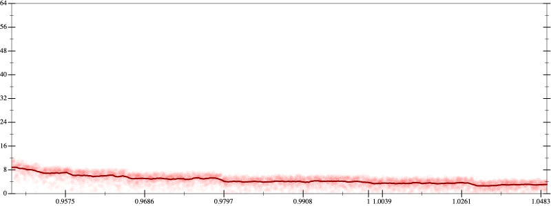
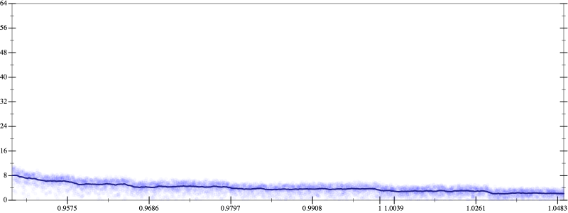
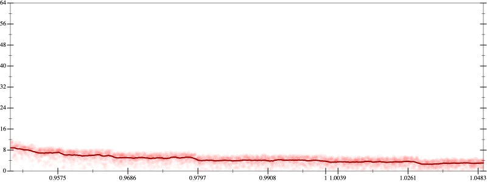
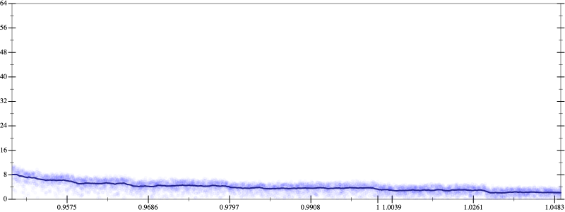

Initial program 4.5
\[\left(\left(-2.1875 \cdot x + 19.6875 \cdot \left(\left(x \cdot x\right) \cdot x\right)\right) + -43.3125 \cdot \left(\left(\left(\left(x \cdot x\right) \cdot x\right) \cdot x\right) \cdot x\right)\right) + 26.8125 \cdot \left(\left(\left(\left(\left(\left(x \cdot x\right) \cdot x\right) \cdot x\right) \cdot x\right) \cdot x\right) \cdot x\right)\]
Applied simplify4.5
\[\leadsto \color{blue}{\left(\left(x \cdot x\right) \cdot \left(x \cdot x\right)\right) \cdot \left(\left(x \cdot x\right) \cdot \left(26.8125 \cdot x\right) + x \cdot -43.3125\right) + \left(-2.1875 \cdot x + \left(x \cdot x\right) \cdot \left(19.6875 \cdot x\right)\right)}\]
- Using strategy
rm Applied add-log-exp4.5
\[\leadsto \left(\left(x \cdot x\right) \cdot \left(x \cdot x\right)\right) \cdot \left(\left(x \cdot x\right) \cdot \left(26.8125 \cdot x\right) + x \cdot -43.3125\right) + \left(-2.1875 \cdot x + \color{blue}{\log \left(e^{\left(x \cdot x\right) \cdot \left(19.6875 \cdot x\right)}\right)}\right)\]
Applied add-log-exp4.5
\[\leadsto \left(\left(x \cdot x\right) \cdot \left(x \cdot x\right)\right) \cdot \left(\left(x \cdot x\right) \cdot \left(26.8125 \cdot x\right) + x \cdot -43.3125\right) + \left(\color{blue}{\log \left(e^{-2.1875 \cdot x}\right)} + \log \left(e^{\left(x \cdot x\right) \cdot \left(19.6875 \cdot x\right)}\right)\right)\]
Applied sum-log4.5
\[\leadsto \left(\left(x \cdot x\right) \cdot \left(x \cdot x\right)\right) \cdot \left(\left(x \cdot x\right) \cdot \left(26.8125 \cdot x\right) + x \cdot -43.3125\right) + \color{blue}{\log \left(e^{-2.1875 \cdot x} \cdot e^{\left(x \cdot x\right) \cdot \left(19.6875 \cdot x\right)}\right)}\]
Applied add-log-exp4.5
\[\leadsto \color{blue}{\log \left(e^{\left(\left(x \cdot x\right) \cdot \left(x \cdot x\right)\right) \cdot \left(\left(x \cdot x\right) \cdot \left(26.8125 \cdot x\right) + x \cdot -43.3125\right)}\right)} + \log \left(e^{-2.1875 \cdot x} \cdot e^{\left(x \cdot x\right) \cdot \left(19.6875 \cdot x\right)}\right)\]
Applied sum-log4.4
\[\leadsto \color{blue}{\log \left(e^{\left(\left(x \cdot x\right) \cdot \left(x \cdot x\right)\right) \cdot \left(\left(x \cdot x\right) \cdot \left(26.8125 \cdot x\right) + x \cdot -43.3125\right)} \cdot \left(e^{-2.1875 \cdot x} \cdot e^{\left(x \cdot x\right) \cdot \left(19.6875 \cdot x\right)}\right)\right)}\]
Applied simplify4.2
\[\leadsto \log \color{blue}{\left({\left({\left(e^{x}\right)}^{\left(\left(x \cdot x\right) \cdot \left(x \cdot x\right)\right)}\right)}^{\left(x \cdot \left(26.8125 \cdot x\right) + -43.3125\right)} \cdot e^{x \cdot -2.1875 + \left(x \cdot x\right) \cdot \left(19.6875 \cdot x\right)}\right)}\]
- Using strategy
rm Applied add-cbrt-cube4.2
\[\leadsto \log \left({\left({\left(e^{x}\right)}^{\left(\left(x \cdot x\right) \cdot \left(x \cdot x\right)\right)}\right)}^{\left(x \cdot \left(26.8125 \cdot x\right) + -43.3125\right)} \cdot \color{blue}{\sqrt[3]{\left(e^{x \cdot -2.1875 + \left(x \cdot x\right) \cdot \left(19.6875 \cdot x\right)} \cdot e^{x \cdot -2.1875 + \left(x \cdot x\right) \cdot \left(19.6875 \cdot x\right)}\right) \cdot e^{x \cdot -2.1875 + \left(x \cdot x\right) \cdot \left(19.6875 \cdot x\right)}}}\right)\]
Applied simplify4.0
\[\leadsto \log \left({\left({\left(e^{x}\right)}^{\left(\left(x \cdot x\right) \cdot \left(x \cdot x\right)\right)}\right)}^{\left(x \cdot \left(26.8125 \cdot x\right) + -43.3125\right)} \cdot \sqrt[3]{\color{blue}{{\left(e^{-2.1875} \cdot {\left(e^{19.6875}\right)}^{\left(x \cdot x\right)}\right)}^{\left(x + \left(x + x\right)\right)}}}\right)\]
- Using strategy
rm Applied pow-pow3.9
\[\leadsto \log \left(\color{blue}{{\left(e^{x}\right)}^{\left(\left(\left(x \cdot x\right) \cdot \left(x \cdot x\right)\right) \cdot \left(x \cdot \left(26.8125 \cdot x\right) + -43.3125\right)\right)}} \cdot \sqrt[3]{{\left(e^{-2.1875} \cdot {\left(e^{19.6875}\right)}^{\left(x \cdot x\right)}\right)}^{\left(x + \left(x + x\right)\right)}}\right)\]
- Using strategy
rm Applied add-sqr-sqrt3.9
\[\leadsto \log \left({\left(e^{x}\right)}^{\left(\left(\left(x \cdot x\right) \cdot \left(x \cdot x\right)\right) \cdot \left(x \cdot \left(26.8125 \cdot x\right) + -43.3125\right)\right)} \cdot \sqrt[3]{{\left(e^{-2.1875} \cdot {\color{blue}{\left(\sqrt{e^{19.6875}} \cdot \sqrt{e^{19.6875}}\right)}}^{\left(x \cdot x\right)}\right)}^{\left(x + \left(x + x\right)\right)}}\right)\]
Applied unpow-prod-down4.0
\[\leadsto \log \left({\left(e^{x}\right)}^{\left(\left(\left(x \cdot x\right) \cdot \left(x \cdot x\right)\right) \cdot \left(x \cdot \left(26.8125 \cdot x\right) + -43.3125\right)\right)} \cdot \sqrt[3]{{\left(e^{-2.1875} \cdot \color{blue}{\left({\left(\sqrt{e^{19.6875}}\right)}^{\left(x \cdot x\right)} \cdot {\left(\sqrt{e^{19.6875}}\right)}^{\left(x \cdot x\right)}\right)}\right)}^{\left(x + \left(x + x\right)\right)}}\right)\]
 
